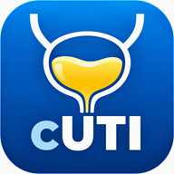

Clinical Decision Support
cUTI Likelihood Decision Tool for NLUTD due to SCI/D
A structured symptom-based tool to estimate the likelihood of complicated urinary tract infection in patients with neurogenic lower urinary tract dysfunction.
Timeframe: Currently present
Bladder management
How does the patient primarily manage their bladder?
Select all symptoms/signs that apply
Clinician guidance:
Patient guidance:
Category totals:
Use with clinical judgment. Evaluate urgent or severe symptoms according to local clinical protocols.